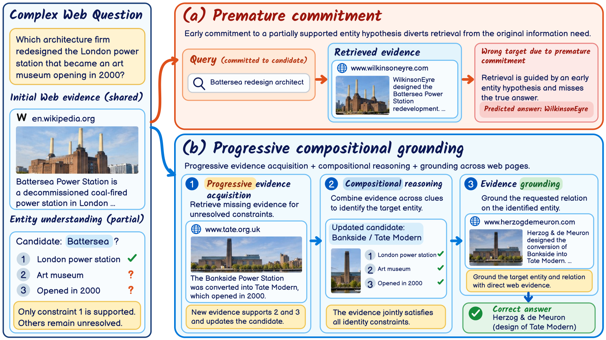
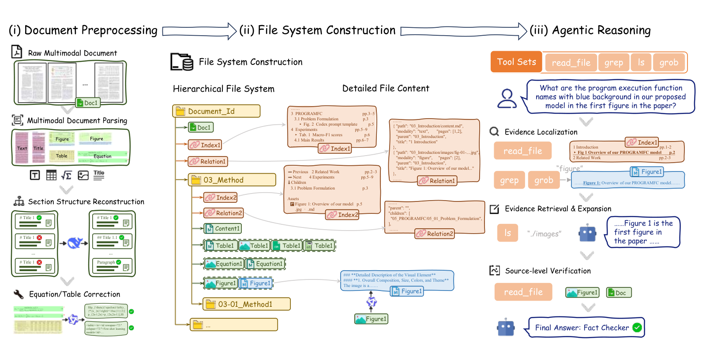
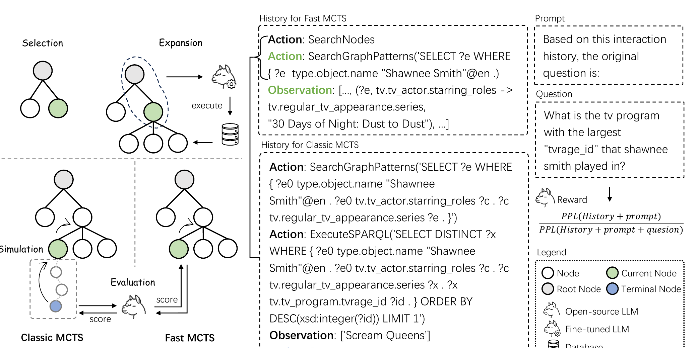
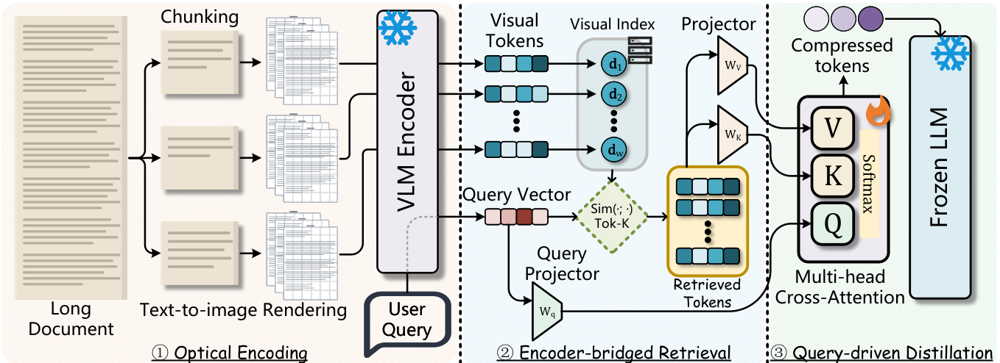

Contents · 9 sections
1A name that matches one clue can pull later retrieval off course2How one question flows through PCG-RAG3Use the candidate name for search, write down the missing conditions, keep searching4Search with the candidate name, answer with the original conditions5At final generation, an answer travels with the pages that identify its subject6Ahead on both datasets, against a different strongest rival on each7Ablation: removing Compositional Reasoning costs the most8Generating with source chains: 2 more correct out of 279Cost: cheaper than the strongest rivals, but not the cheapestSHARE
The complex Web QA questions the paper focuses on (from datasets such as BrowseComp-Plus and WebWalkerQA) do not name the entity directly; they describe it with a few clues and then ask about one of its relations. An example: which architecture firm redesigned the London power station that later became an art museum and opened in 2000. The clues are usually spread across different pages, so the first search may well hit Battersea, which matches only "London power station"; treating it as the answer and looking up its architect gives a wrong answer. PCG-RAG treats such a name as a candidate still being verified, records which conditions are still missing, and passes to generation only intermediate answers whose sources are complete. With Qwen3.8-27B as the base model, it beats the strongest compared method on the two datasets by 5.43 and 5.15 percentage points. The paper targets one specific error: a name that matches only some clues can keep serving as a search term, but it is accepted as an answer only once evidence connects it to every condition in the question.
A name that matches one clue can pull later retrieval off course
These questions come from complex Web QA datasets such as BrowseComp-Plus and WebWalkerQA. The questions the paper focuses on do not name the entity directly. It describes the entity with several clues and then asks about one of its relations. The paper opens with this example: "Which architecture firm redesigned the London power station that became an art museum opening in 2000?" The system must first use three clues (London power station, art museum, opened in 2000) to work out which power station is meant, and only then look up its architect.
The difficulty is that the three clues sit on different pages. The first retrieval round may well hit the Wikipedia page for Battersea Power Station. It is indeed a London power station, but the page says nothing about a museum or the year 2000. At this point Battersea matches one of the three clues. The name is still useful, because searching with it is far more specific than searching with the whole description. The name is useful but unverified, and the hard part is deciding how to use it.
Existing multi-step RAG uses intermediate results to guide later retrieval. IRCoT and ReAct interleave reasoning with retrieval. ReWOO, LQT (a method that organizes subqueries into a logical query tree) and LogicRAG first split the question into dependent subquestions, then fill upstream answers into the slots of downstream questions. On this question, step one identifies Battersea, so step two becomes "Who redesigned Battersea?" Retrieval returns a page on wilkinsoneyre.com saying WilkinsonEyre designed the Battersea Power Station redevelopment. That page fully supports the step-two question, so the system answers WilkinsonEyre.
The step-two retrieval did nothing wrong; the error is the unverified premise "Battersea". The correct answer comes from following the two unresolved clues. Tate's website says the Bankside Power Station was converted into Tate Modern, which opened in 2000, and an architectural source attributes the conversion to Herzog & de Meuron.

PCG-RAG (Progressive Compositional Grounding RAG, the authors' name for the framework) explicitly labels names like Battersea as "candidates still being checked" and keeps them in a separate record from "accepted answers". With Qwen3.8-27B as the base model, it reaches 71.33% accuracy on BrowseComp-Plus, 5.43 percentage points above WebThinker, the strongest compared method on that dataset. On WebWalkerQA it reaches 64.56%, 5.15 points above DeepHone, the strongest compared method there. The strongest competitor is a different method on each dataset.
How one question flows through PCG-RAG
No model is trained. Planning, evidence assessment and final generation all run at inference time with the same base LLM following different prompts; retrieval and reranking use separate models. A question is first split into subquestions; Compositional Reasoning then handles each subquestion in dependency order, calling Progressive Evidence Acquisition for each one to gather evidence; finally Evidence Grounding organizes the evidence and generates the answer. The four parts are:
| Step | Input | What it does | Output |
|---|---|---|---|
| Question decomposition | The original question Q | Splits the question into subquestions ordered by dependency | A subquestion dependency graph (DAG) in JSON |
| Progressive Evidence Acquisition | One subquestion and the passages visible to it | Judges whether the evidence suffices; if not, records a candidate and the gap, then searches for the gap | An accepted answer with citations, or a candidate with a gap |
| Compositional Reasoning | Results of upstream subquestions | Substitutes candidate names for retrieval, keeps unresolved original conditions for answering | Each subquestion's answer and direct citations |
| Evidence Grounding | Accepted answers with their source chains, and the input budget | Selects passages and presents only intermediate answers whose sources are complete | The final answer |
Illustration: the power-station question splits into two subquestions. Q1 is "Which London power station later became an art museum that opened in 2000?", with output x1. Q2 is "Who redesigned {x1}?", which depends on Q1. The next three sections walk the three components through these two subquestions.
Use the candidate name for search, write down the missing conditions, keep searching
Once the Battersea page is in hand, there are two simplest options. One is to accept it right away, which later produces WilkinsonEyre. The other is to discard it as unverified and search again with the whole description, which gives up a name that could narrow the search.
Progressive Evidence Acquisition takes the middle path. Each time the model reads a batch of passages, it assigns the current subquestion a status. Supported means the answer is established under the original question's conditions. Provisional means there is a cited candidate but a stated gap remains. Insufficient means there is not even a candidate. The candidate is kept only when the status is provisional and cleared otherwise. Illustration: the first assessment of Q1 looks roughly like this (field names come from the prompt in the paper's appendix; passage IDs are made up):
{
"status": "provisional",
"answer": "Battersea Power Station",
"sources": ["p1"],
"missing": "whether it became an art museum; whether it opened in 2000",
"next_queries": ["Battersea Power Station art museum opened 2000",
"London power station converted art museum 2000"]
}The next query is formed from the candidate name and the gap together; the model can also read an open page more closely or follow a link on it. Suppose the next search finds the tate.org.uk page. The next assessment then replaces the candidate with Bankside: all three clues have cited support, no gap remains, and the status becomes supported. Acceptance is strict: a nonempty answer, a supported status, aligned citations, and no stated gap. Acceptance ends the attempt for that subquestion; otherwise the search continues until the follow-up allowance is used up (4 actions per subquestion on BrowseComp-Plus, 8 on WebWalkerQA).
Search with the candidate name, answer with the original conditions
Q2 depends on Q1, but Q1 may not be resolved yet. Compositional Reasoning solves subquestions in dependency order and still attempts a downstream subquestion when its parent is unresolved. The key is that the same downstream subquestion is written in two versions.
The retrieval seed uses the parent's candidate name, the answering task keeps the parent's unresolved original conditions, and the original question Q is supplied every time.
Illustration: suppose Q1 is still provisional at Battersea when Q2 starts.
- Retrieval seed: "Battersea Power Station redesign architect", used to narrow the search.
- Answering task: "Who redesigned [the London power station that later became an art museum opened in 2000]?", used to judge whether the evidence is enough.
The retrieval seed still brings back the WilkinsonEyre page. But the answering task asks about the former identity of an art museum opened in 2000, and this page only covers Battersea's redevelopment, with no link to a museum or the year. So Q2 stays provisional and is not accepted. If Battersea were filled into both versions, as in ReWOO, the answering task would become "Who redesigned Battersea?", the page would fully support it, and WilkinsonEyre would be accepted on the spot. Writing two separate versions is what blocks that step.
Once the parent is accepted (Q1 resolves to Bankside), both versions use Bankside. In the other direction, a child can be accepted before its parent. If a page said "Tate Modern, opened in 2000, was converted from the Bankside Power Station, designed by Herzog & de Meuron", that page would establish both the subject and the relation by itself, and Q2 could be accepted while Q1 is still open.
At final generation, an answer travels with the pages that identify its subject
After the first two steps, Q2's answer Herzog & de Meuron has been accepted. But if the generator received only the herzogdemeuron.com page, it would see no evidence that this power station became an art museum in 2000. It would have no way to connect the firm to the power station the question describes.
The simplest approach ranks passages by relevance to the question and keeps the top few. Illustration: the question asks which architecture firm redesigned a London power station. The WilkinsonEyre page and the Herzog page both discuss architects of power-station conversions and rank highest. The Tate page is about a museum opening and ranks lower. If the budget fits only two passages, the Tate page is dropped. The generator then holds two power stations and two architects, with no evidence about which one became the art museum opened in 2000.
Evidence Grounding first builds a source chain for each accepted answer: its own direct citations plus the source chains of all accepted parents. Illustration: Q1's source is the Tate page and Q2's direct citation is the Herzog page, so Q2's source chain is both pages. An unresolved parent contributes no sources, so the child's own citations must identify the subject.
The second step selects passages. An intermediate answer is presented to the generator only when its entire source chain is in the context. Selection maximizes the number of presentable intermediate answers within the budget, and ties go to the shorter prompt. Illustration: three accepted answers, where A's source chain is {p1}, B inherits from A with source chain {p1, p2}, and C's source chain is {p3, p4, p5}. The budget fits 3 passages. Choosing {p1, p2} presents two answers, A and B; choosing {p3, p4, p5} presents only C. So the former is chosen, and the remaining slot is filled with another archived passage. With at most 10 accepted subquestions the selection is enumerated exactly; larger plans use a greedy rule.
Selection works this way instead of by relevance because an identifying passage like the Tate page is not very relevant to the question on its own. Its value comes from the relation it connects.
Ahead on both datasets, against a different strongest rival on each
BrowseComp-Plus has 830 questions, and all methods retrieve from the same fixed Web corpus. WebWalkerQA has 680 questions; each starts from an official entry URL and uses Exa search plus link navigation. DeepSeek-V4.1-Flash judges answer correctness against each dataset's references. The baselines fall into two groups. Web search agents decide for themselves what to search and read: WebThinker, Search-o1, Q2Q and DeepHone. RAG methods explicitly organize retrieved evidence: RADAR (a method that selects evidence by modeling support and conflict among documents), LQT and LogicRAG.
| Method | BrowseComp-Plus | WebWalkerQA |
|---|---|---|
| WebThinker | 65.90 | 53.68 |
| Search-o1 | 65.30 | 55.15 |
| DeepHone | 55.30 | 59.41 |
| LQT | 60.00 | 56.76 |
| LogicRAG | 53.98 | 52.21 |
| RADAR | 31.69 | 44.12 |
| PCG-RAG | 71.33 | 64.56 |
PCG-RAG ranks first on both datasets, while the strongest compared method differs by dataset: WebThinker on one, DeepHone on the other. This means its lead does not depend on one kind of evidence environment: it holds for fixed-corpus retrieval and for open browsing.
LQT is the strongest RAG baseline and also organizes subquestions by dependency; PCG-RAG beats it by 11.33 and 7.80 points. The authors' explanation is that a dependency structure is not enough, and the entities filling its slots must be established from new evidence.
Ablation: removing Compositional Reasoning costs the most
Each ablation removes one component while keeping the base model, retrieval resources and generation budget fixed:
- Without Progressive Evidence Acquisition: each subquestion gets initial retrieval and one assessment, with no follow-up search even when a gap remains.
- Without Compositional Reasoning: subquestions remain, but parent answers and candidates are no longer filled into downstream queries, so each subquestion searches on its own.
- Without Evidence Grounding: generation selects passages by relevance and still presents intermediate answers, but does not require their complete source chains.
| Variant | BrowseComp-Plus | WebWalkerQA |
|---|---|---|
| PCG-RAG | 71.33 | 64.56 |
| Without Progressive Evidence Acquisition | 66.99 | 59.56 |
| Without Compositional Reasoning | 57.95 | 57.65 |
| Without Evidence Grounding | 66.63 | 59.41 |
On BrowseComp-Plus, removing Compositional Reasoning costs 13.38 points. The other two components cost 4.34 and 4.70 points, which add up to 9.04, still less than the first. This means that in a large corpus, Compositional Reasoning contributes the most of the three components. The ablation switches it off as a whole and does not separate which half of it contributes more.
On WebWalkerQA the three losses are close: 5.00, 6.91 and 5.15. The authors attribute this to WebWalkerQA providing entry pages, which eases the pressure of locating subjects from descriptions in a large corpus. Also, without Progressive Evidence Acquisition PCG-RAG still scores 66.99 on BrowseComp-Plus, slightly above WebThinker's 65.90, so one cannot claim that every component is required to beat the baselines.
Generating with source chains: 2 more correct out of 27
To isolate Evidence Grounding, the authors use 27 BrowseComp-Plus dependency questions. For these questions the shared retrieved evidence already contains complete support for both identifying the subject and the relation. Two generation conditions use the same evidence and budget: one selects passages independently by relevance, the other uses PCG-RAG's source-chain selection. "Joint support" asks whether the original passages in the generation context connect the entity the question describes to the requested relation.
Among 15 cross-page questions, relevance selection missed the identifying passage on 1 question, so joint support and accuracy are both 93.3%; PCG-RAG reaches 100% on both. Among 12 single-page questions, joint support is 100% in both conditions, and accuracy rises from 83.3% to 91.7%. Overall it is 24/27 versus 26/27. This means the direction matches the power-station illustration: across pages, the identifying page is easily pushed out by relevance ranking. But the gap is only 2 questions, the 27 are what remains of 40 after removing 13 with incomplete support, and source selection and intermediate-answer presentation change together, so their separate contributions cannot be told apart.
![(a) WebWalkerQA case: a university Party committee meeting page has a different position level, so the search goes on to identify Zhao Hanqiang, secretary of the administrative Party branch, and his national teaching achievement award, while a parallel branch confirms Ling Li's alumni status and Mao Dun Literature Prize; (b) BrowseComp-Plus case: dissertation and publication records identify the author Abhishek Jain, the dissertation acknowledgments mention California Pizza Kitchen, and the restaurant's history gives its 1985 founding](../../../figs/2026-11-13/retrieval/2611.11113/hf4.png)
Figure 4(b) shows this cross-page assembly end to end. The question asks for the restaurant named in a dissertation's acknowledgments, with clues about the university, degree years, coauthored papers and the restaurant's founding year. On its own, the acknowledgment page is just one line about eating at California Pizza Kitchen a little less often. It becomes the answer only after the dissertation and publication records identify Abhishek Jain.
Another line of evidence comes from MuSiQue (a multi-hop QA set where each question needs 2 to 4 reasoning steps and supporting passages are annotated). R@5 is the fraction of annotated supporting passages covered by the top 5 passages, and All@5 is the fraction of questions whose top 5 passages contain every supporting passage. PCG-RAG reaches 83.91 R@5 and 64.30 All@5, above MGranRAG's 80.60 and 59.90. On 4-hop questions All@5 is only 16.87, so the rate of finding all the evidence remains low. This experiment disables follow-up search and makes one attempt per subquestion, so it says nothing about the effect of Progressive Evidence Acquisition.
In the three BrowseComp-Plus trajectories of Figure 3, the upstream entity record stays wrong while the downstream answer is correct. Each downstream task carries the original question Q and the unresolved original conditions, so new evidence can establish the correct subject and relation directly. The wrong upstream record is never corrected; it simply does not mislead the downstream step.
Cost: cheaper than the strongest rivals, but not the cheapest
On BrowseComp-Plus, PCG-RAG uses 47.40K tokens, 8 calls and about 600 seconds per question. WebThinker uses 278.49K tokens, 56 calls and 1591 seconds per question, so PCG-RAG uses 82.98% fewer tokens with 62.31% lower latency. On WebWalkerQA it uses 70.86% fewer tokens than DeepHone, with 51.31% lower latency. This means that against these two strongest rivals, the accuracy gain was not bought with more tokens; on BrowseComp-Plus it also uses fewer calls.
Against LogicRAG, which uses a similar number of tokens (47.40K versus 51.24K on BrowseComp-Plus), PCG-RAG is 17.35 points more accurate, and 12.35 points on WebWalkerQA. This means that, at least on BrowseComp-Plus where token use is similar, PCG-RAG is still more accurate. It is not the cheapest either: on BrowseComp-Plus, RADAR uses fewer tokens and takes only about 173 seconds, but its accuracy is just 31.69%. Most of PCG-RAG's tokens are input, so its cost goes mainly to the evidence each call has to read.
Back to the power-station question: the name Battersea should be used, but only for searching. PCG-RAG's three components each handle one job: keep searching with the gap in hand, write the search and the answer separately, and finally hand the generator the identifying pages together with the answers. The ablation shows that in a large corpus removing the second job costs the most (13.38 points); the other two are each worth 4 to 5 points.
How did this read for you?
Hoot made a note. Thanks for the feedback.
One tap, no sign-in; tap again to undo. Only anonymous counts are kept, never who you are.
Related papersMore from Paper Daily

Retrieval · 2026-11-12DocFS: File Systems as Agentic Reasoning Environments for Complex Multimodal Document Question AnsweringWhen a VLM agent answers questions over long documents that mix text, figures and tables, the hard part is often how the document is laid out for it, not the model. DocFS takes a plain route: it turns the document into a file system, with sections as nested directories and text, figures, tables and equations stored as separate files, plus index files and relation files that record which text goes… Retrieval · 2026-10-29Tessera: Structure-Completed Evidence Units for Web Retrieval-Augmented GenerationAsk Wikipedia who produced Willy Wonka and the Chocolate Factory, and the answer sits in the producer row of the page's infobox. Text extraction drops the two names in that cell, the reader model sees only the director, and it answers wrong. Tracing answer evidence from page source to reader input over all of English Wikipedia, this paper finds such loss is common: for 7.6% of questions the evide…
Retrieval · 2026-10-29Tessera: Structure-Completed Evidence Units for Web Retrieval-Augmented GenerationAsk Wikipedia who produced Willy Wonka and the Chocolate Factory, and the answer sits in the producer row of the page's infobox. Text extraction drops the two names in that cell, the reader model sees only the director, and it answers wrong. Tracing answer evidence from page source to reader input over all of English Wikipedia, this paper finds such loss is common: for 7.6% of questions the evide…
Retrieval · 2026-11-04MCTS-KBQA: Monte Carlo Tree Search with Information Gain Rewards for Knowledge Base Question AnsweringWhen an LLM uses MCTS to find answers step by step over a knowledge base, intermediate steps can be given useful scores without training a reward model and without simulating to the end. The method gives the query history up to that step to an open instruction model and computes the perplexity of that history with and without the original question attached. The more the perplexity drops once the…
Retrieval · 2026-11-12OpticalRAG: Pixel-Space Compression for Token-Efficient Retrieval-Augmented GenerationTo save tokens, RAG systems usually delete words or summarize the text, and the harder they compress, the more detail they lose. OpticalRAG goes the other way: it renders documents as page images, encodes them into visual tokens with a frozen vision encoder, and does both retrieval and compression on those visual tokens. A text query passes through a light projection into the same visual feature… Retrieval · 2026-11-11Lightfoot: Graph Retrieval-Augmented Generation with Exact, Model-Free Document DeletionGraphRAG in production has two costs that papers rarely count: what it takes to build the graph, and how painful it is to delete a document. When a contract expires or a user asks for erasure, a document and everything derived from it must go, yet entity summaries that blend several documents are hard to take apart. Lightfoot requires every record in the graph to be computed only from single-pass…
Retrieval · 2026-11-11Lightfoot: Graph Retrieval-Augmented Generation with Exact, Model-Free Document DeletionGraphRAG in production has two costs that papers rarely count: what it takes to build the graph, and how painful it is to delete a document. When a contract expires or a user asks for erasure, a document and everything derived from it must go, yet entity summaries that blend several documents are hard to take apart. Lightfoot requires every record in the graph to be computed only from single-pass… Retrieval · 2026-11-05From Logs to Faults: Reference-Free Fault Localization for Retrieval-Augmented Generation PipelinesRAGLog reads only the API logs each run of a RAG pipeline leaves behind, with no reference answers and no code changes, and points out which stage of the run went wrong. This matters because a pipeline can go wrong in the middle and still give the right final answer. Across natural runs of five open-source pipelines, 37% had at least one faulty stage, and more than a third of those still answered…
Retrieval · 2026-11-05From Logs to Faults: Reference-Free Fault Localization for Retrieval-Augmented Generation PipelinesRAGLog reads only the API logs each run of a RAG pipeline leaves behind, with no reference answers and no code changes, and points out which stage of the run went wrong. This matters because a pipeline can go wrong in the middle and still give the right final answer. Across natural runs of five open-source pipelines, 37% had at least one faulty stage, and more than a third of those still answered… Retrieval · 2026-11-02Retrieving from Your Own Mistakes: On-Policy Training of Embedding Models for Multi-Hop Retrieval-Augmented GenerationChain embedding retrievers for multi-hop retrieval see different histories in training and in use, and this paper fixes that without adding any LLM call. At each step such a retriever joins the question with the passages found so far to look for the next one; in training its history holds only correct passages, but in use it often holds wrong passages it found itself. On four-hop MuSiQue question…
Retrieval · 2026-11-02Retrieving from Your Own Mistakes: On-Policy Training of Embedding Models for Multi-Hop Retrieval-Augmented GenerationChain embedding retrievers for multi-hop retrieval see different histories in training and in use, and this paper fixes that without adding any LLM call. At each step such a retriever joins the question with the passages found so far to look for the next one; in training its history holds only correct passages, but in use it often holds wrong passages it found itself. On four-hop MuSiQue question… Retrieval · 2026-08-05From Relevance to Authority: Authority-aware Generative Retrieval in Web Search EnginesDeep dive: From Relevance to Authority: Authority-aware Generative Retrieval in Web Search Engines.
Retrieval · 2026-08-05From Relevance to Authority: Authority-aware Generative Retrieval in Web Search EnginesDeep dive: From Relevance to Authority: Authority-aware Generative Retrieval in Web Search Engines.
Discussion
Add experiment details, reproduction notes or a different take. Requires a GitHub sign-in.
Loading the discussion…